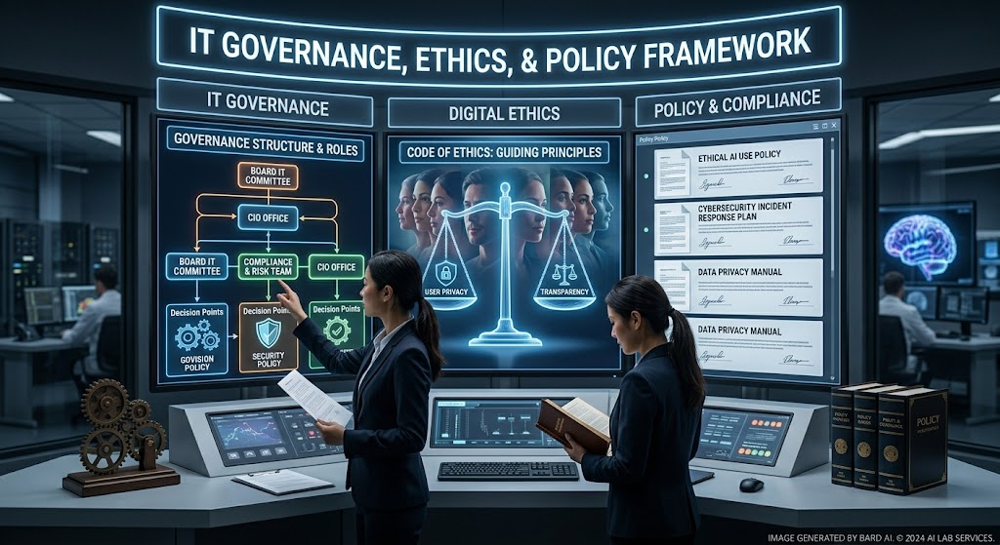

MIS & AI EthicsWebsite OverviewCole Schwartz, Grace Pruetz, Catherine Graves, Hannah Pape, Marie WykrentOctober 20, 2026Home | AI Usage | Security | About Us  Image source: MIS_topic_relation-IT_Governance_Ethics_&_Policy.jpeg Welcome to Our WebsiteWelcome to our website about Management Information Systems (MIS) and artificial intelligence (AI) ethics. We explore how organizations use technology to make business decisions and manage information and data. The purpose of this website is to help others understand both the benefits and challenges of artificial intelligence and related tools. Organizations that use these emerging technologies must consider privacy, accountability, and cybersecurity for their users. On our website, we also highlight the importance of responsible technology use. Understanding these issues helps people make more educated decisions about how they interact with the modern world. AI-polished version: Welcome to our website, where we explore Management Information Systems (MIS) and the ethics of artificial intelligence (AI). We examine how organizations use technology to support business decisions and manage information and data. Our goal is to help visitors understand both the benefits and the challenges of these powerful tools. Organizations adopting emerging technologies must carefully consider privacy, accountability, and security for the people they serve. That is why we emphasize responsible technology use throughout our site. By understanding these issues, readers can make more informed decisions in an increasingly digital world. AI-polished paragraph generated with Claude (Anthropic), October 2026.MIS Topic Overview
Get in Touch! |